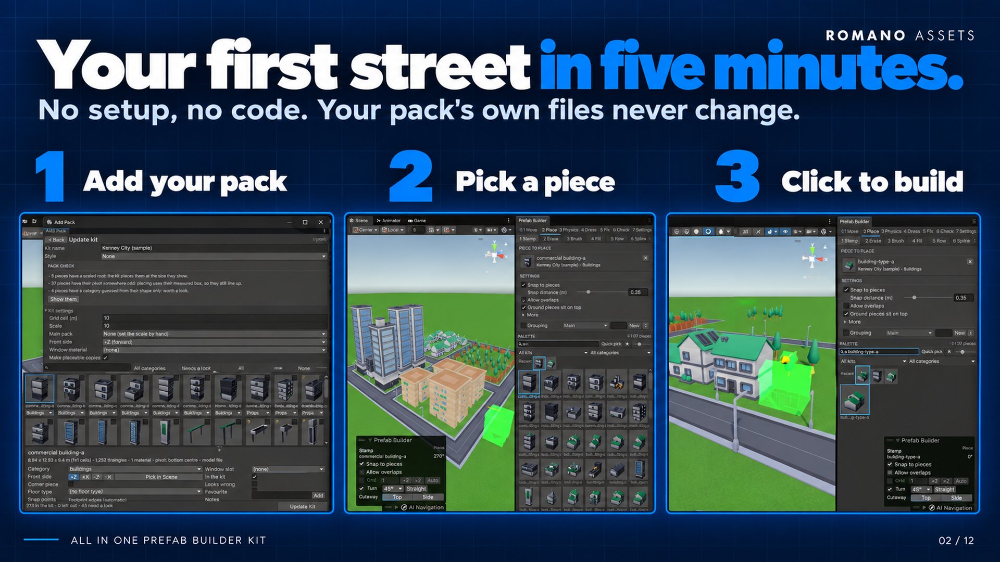

Adding Packs
A kit is a pack turned into placeable pieces: every prefab or model measured, sorted into a category and annotated (front side, corner piece, surface…). The Add Pack wizard makes kits. Open it with Tools > All In One Prefab Builder > Add Pack...

1. Choose the pack #
The first page offers four ways in. None of them changes anything until you click.
Found in your project. Folders that look like packs (at least 5 prefabs or models, not a kit yet) are listed.
Click Scan to review one, or Not a pack to never be offered it again. Publisher folders holding several packs
(Assets/Publisher/PackA, .../PackB) are offered as separate packs.
Add from disk (.zip or folder). For packs that aren't a .unitypackage: most free kits come as a .zip. Click
Choose a pack folder, or the folder your .zip files are in and pick either a pack's folder or the folder holding
its .zip (your Downloads folder, for example): every pack found there, folders and .zip files alike, is listed
with what will be copied. Or drag .zip files and folders from your file explorer onto the wizard. Untick any you
don't want and click Add. Packs are copied into
Assets/Imported Packs/ (the packsFolder setting), then scanned. Only what a kit needs is copied:
- where a pack ships each model in several formats (FBX, OBJ, GLB…), one is kept: FBX first, then OBJ (with its
.mtl), then the others; folders of the formats not kept are left out, textures included; - preview images, web links, pages, executables, code and archives are left out;
- a folder holding several packs side by side, or several
.zipfiles, gives one pack each (a.zipnext to the folder it was unzipped to counts once).
Nothing on disk is changed. Adding a pack that's already in the project updates its files in place, so kits made from
it keep their links. glTF (.glb) models need a glTF importer package in your project.
Choose a folder. Browse the project's folders right in the window (each shows how many prefabs and models it holds) and click one, or drag a folder from the Project window onto the wizard. Choose several folders to make one kit of them. Then click Scan.
Import a .unitypackage. Choose a package file (or drag one onto the window) and click Import with Unity's importer. Unity's own import window opens, where you see every file and confirm. When the import finishes, the folders it added are scanned automatically.
2. What the scanner does #
- Finds every prefab in the folder, and every model (FBX, OBJ, …) that none of those prefabs already uses. A pack that ships only models works; a pack that ships prefabs of its models isn't counted twice.
- Measures each piece without placing it: visible box (footprint and height), triangles (LOD 0 only), materials, and where its pivot is (bottom centre, centre, a corner, or elsewhere).
- Flags problems: an empty material slot, a shader for a different render pipeline (it would look pink), a scaled root, an animated character, a piece with nothing visible. Pieces with nothing visible and animated characters start left out of the kit.
- Guesses each piece's category from the words in its name, then its folders, then its shape; whether it is a corner piece; the surface of ground pieces; and which material slot is the windows. The words it looks for are data in the RuleSet (categories) and project settings (surfaces), so you can teach it a pack's naming.
Large packs are fine: pieces are loaded one at a time, and a re-scan only measures files that changed.
3. The review screen #
Pack check (at the top, when there's anything to say): what the scan found across the whole pack, counted, materials made for another render pipeline (they look pink until converted), broken shaders, empty material slots, pieces with no mesh, scaled roots, odd pivots, animated characters, categories guessed from shape only. Show them shows just those pieces; in a URP project, Render Pipeline Converter… opens Unity's own converter (it changes the pack's materials: the kit never does).
Kit name and Style. A kit belongs to a style (a look, such as "low poly town"); a new style is made for the first kit. The rules can warn about or block mixing styles in one area.
Kit settings (the fold-out at the top):
| Setting | What it's for |
|---|---|
| Grid cell (m) | The size of the kit's road and ground tiles. Guessed from the most common tile size; Use applies the guess. Footprints are counted in these cells. |
| Scale | Scale of the placeable copies. If the kit's road tiles or buildings are hardly bigger than your character, a note suggests a scale (many free kits are built at 1 unit per tile). A new kit takes the scale of the other kits in its style. |
| Main pack | Pick the pack this one should match in size, a kit you already made, any pack in the project (even one that isn't a kit yet: a sample of it is measured), or your character. The scale is set straight away, worked out by comparing the first thing both packs have, the road grid (the smallest common tile side, so a pack with 10 m and 15 m roads is on a 10 m grid), else the typical height of street lights, fences, buildings, then ground tiles, trees, vehicles, and the comparison is shown. |
| Front side | The front of every piece you don't set one by one. |
| Window material | The material slot that is the windows (used by facade tools later). Pieces can override it. |
| Make placeable copies | See below. On by default. |
The grid shows every piece with its thumbnail, name and a category dropdown. Badges on the thumbnail: ! a problem (hover to read it) or flagged as looking wrong; ? the category is only a guess from its shape, or nothing matched; C a corner piece; * a favourite. Left-out pieces are faded.
- Search by name, filter by category, Needs a look (only pieces with a badge or an odd pivot), Show left out, and the thumbnail size slider.
- Click to select; tick the box on a thumbnail (or Ctrl/Cmd-click) to add it; Shift-click for a range; All selects every piece shown, None clears. Changing the category dropdown of a selected piece changes every selected piece.
- Fixing many at once: filter Needs a look (or a category, or search), click All, and set the fields once.
- Right-click for include / leave out, category, front, corner, looks wrong, and Pick the front in the Scene view.
The details panel under the grid edits the selection:
- Category, Front side (+Z, +X, -Z, -X, or Pick in Scene: the piece is shown in the Scene view with an arrow on each side: click the one on its street side; nothing is added to your scene), Corner piece, Surface (ground pieces).
- Window slot, In the kit, Looks wrong (a flag to come back to), Favourite, Notes.
- Snap points. None means the edges of the footprint, which is right for most pieces. Add custom points (position in the piece's own frame and the side they face) for pieces that join elsewhere.
With several pieces selected, the same panel edits all of them: a field shows a dash where they differ, and whatever you set applies to every selected piece (category, front, corner, surface, window slot, in the kit, looks wrong, favourite, notes). Snap points and Pick in Scene are for one piece at a time.
Click Create Kit (or Update Kit). The kit is saved in your data folder under Kits/.
Placeable copies #
With Make placeable copies on, each piece gets a copy in Kits/<Kit name> Prefabs/: a prefab variant of the
pack's prefab or model (so a pack update still flows through) with what a world piece needs, as its category's
rules say:
- a box collider fitted to it if it has no collider,
- static flags (batching, occlusion, reflection probes) on categories that don't move,
- a Surface Tag carrying its surface on ground and road pieces.
With a kit scale other than 1, the copy is a scale-1 object holding the scaled original, so its collider is never scaled. The pack's own files are never changed. Copies are only rebuilt when something they're made from changes, so their GUIDs, and everything you placed from them, stay put.
Re-scanning and managing kits #
In the Prefab Builder window, Settings > Kits (or the Inspector of a kit asset):
- Re-scan and review: scans the pack folders again (for a pack update, or new pieces). Everything you set by hand is kept; guesses are refreshed; pieces whose files are gone are dropped.
- Rename: the kit and its copies' folder (the copies keep their links).
- Hidden: keep the kit but hide it from the palette.
- Merge another kit into this one: its pieces and folders move here; the other kit is deleted.
- Export its annotations: a preset file with only this kit (see Presets).
- Remove kit: deletes the kit, and optionally its placeable copies. The pack is never touched.